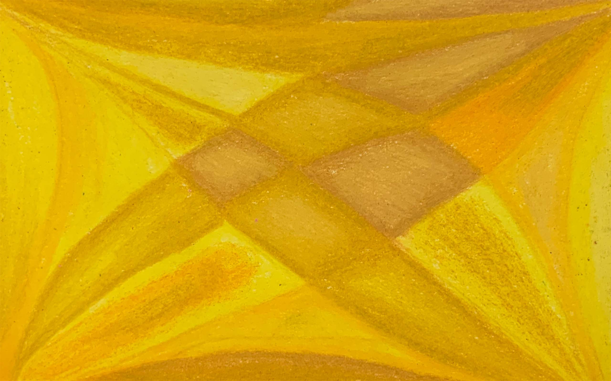
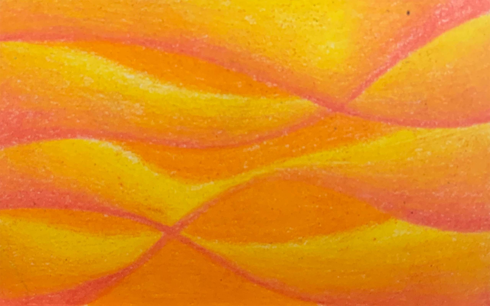
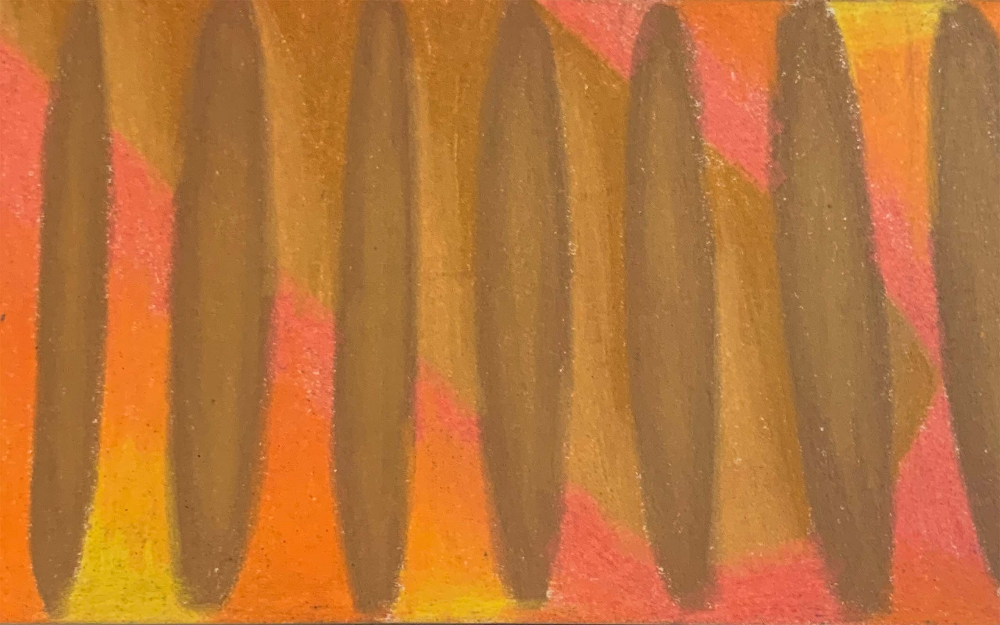
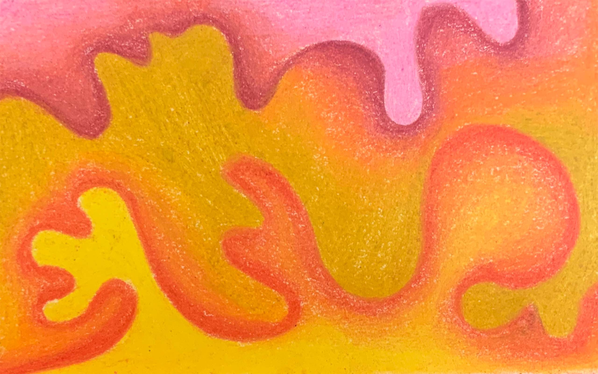
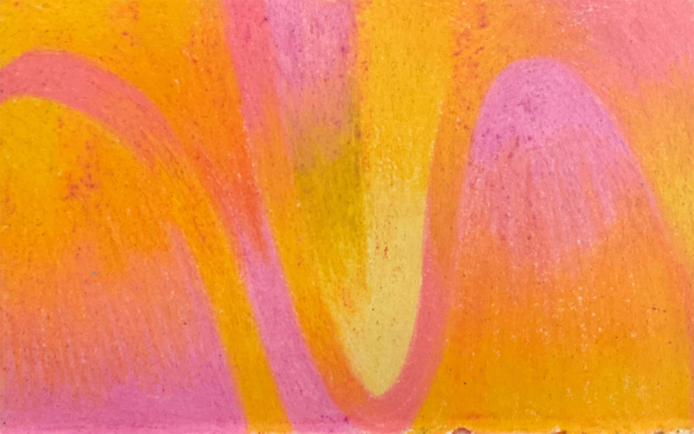
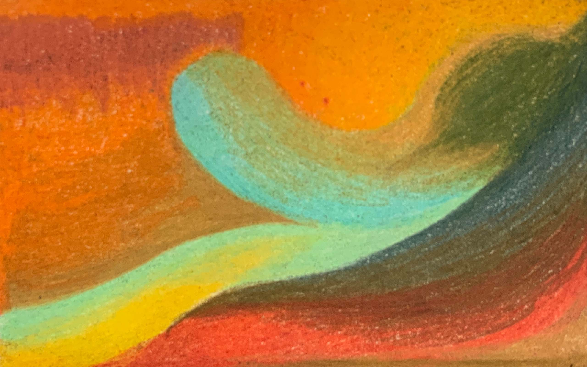
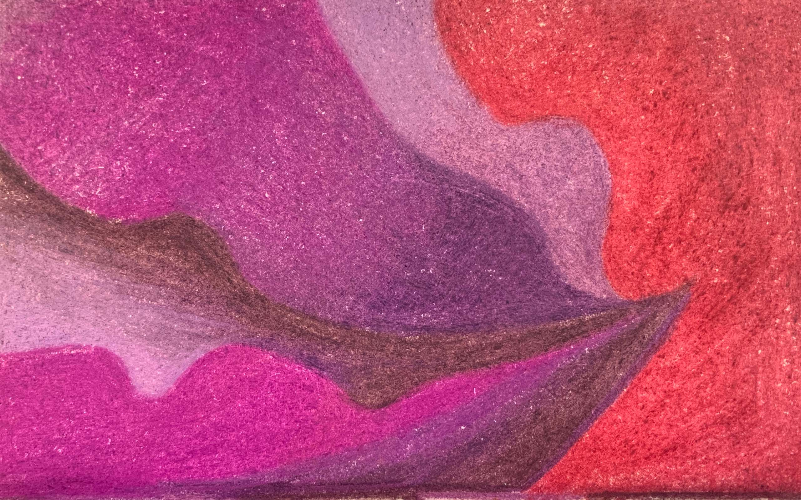
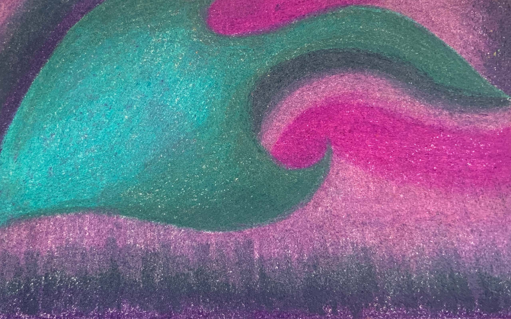
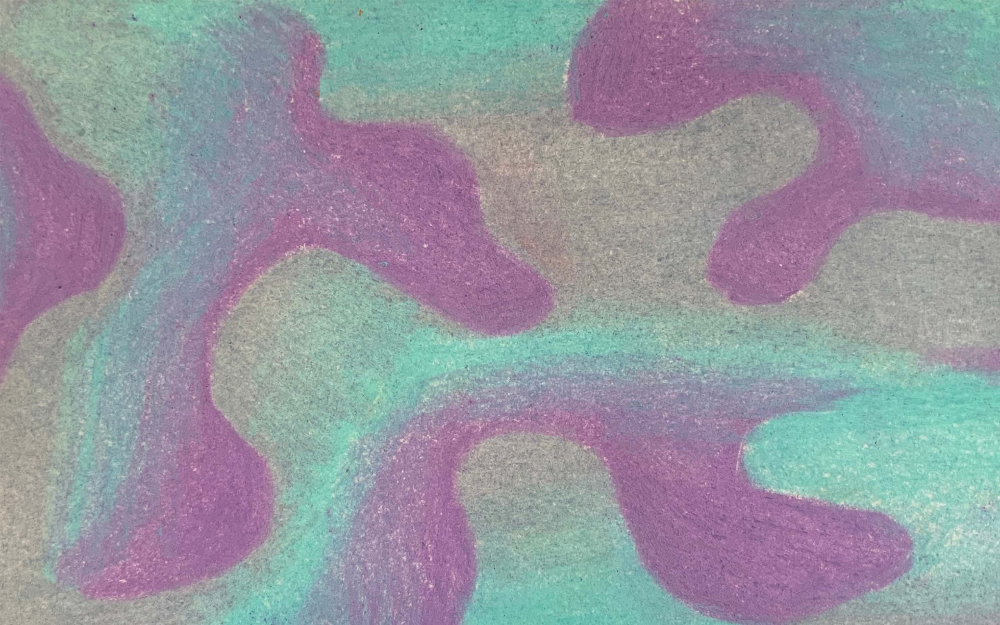
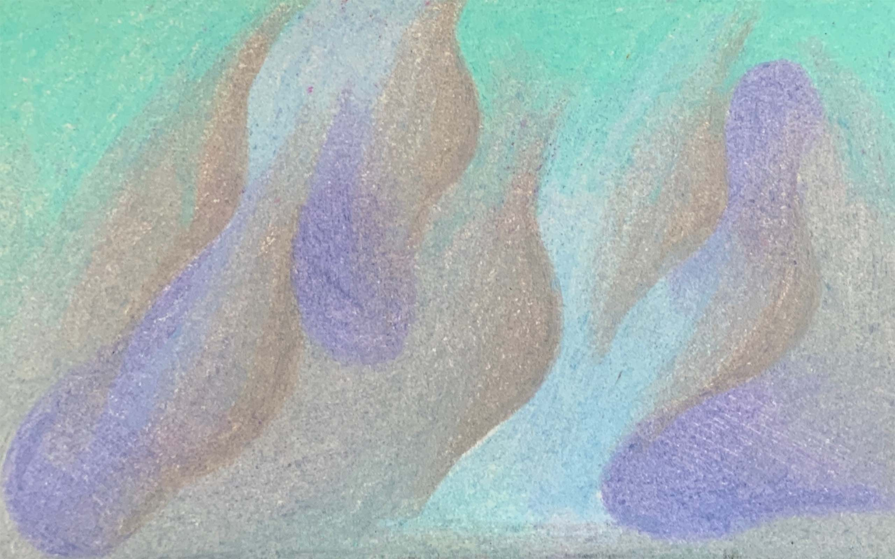
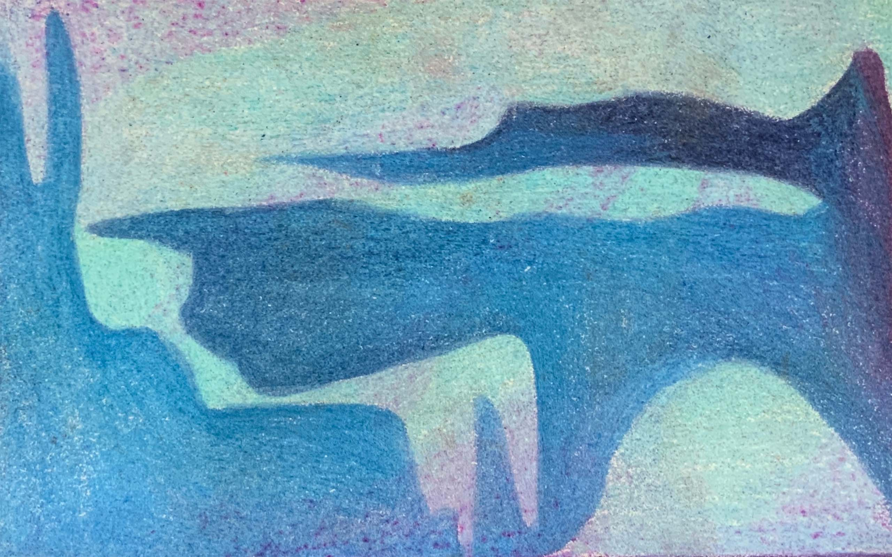
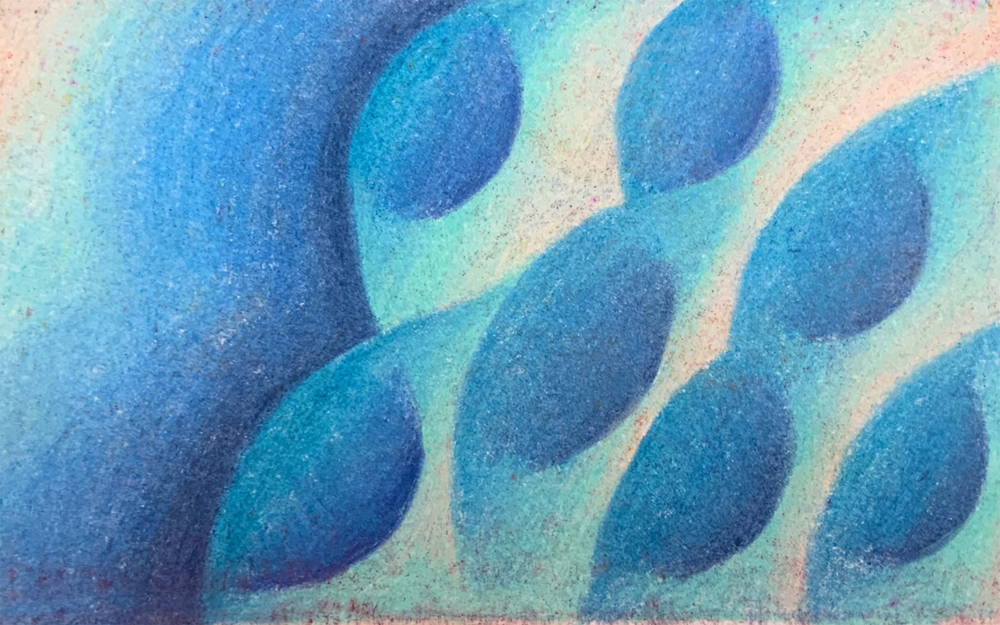
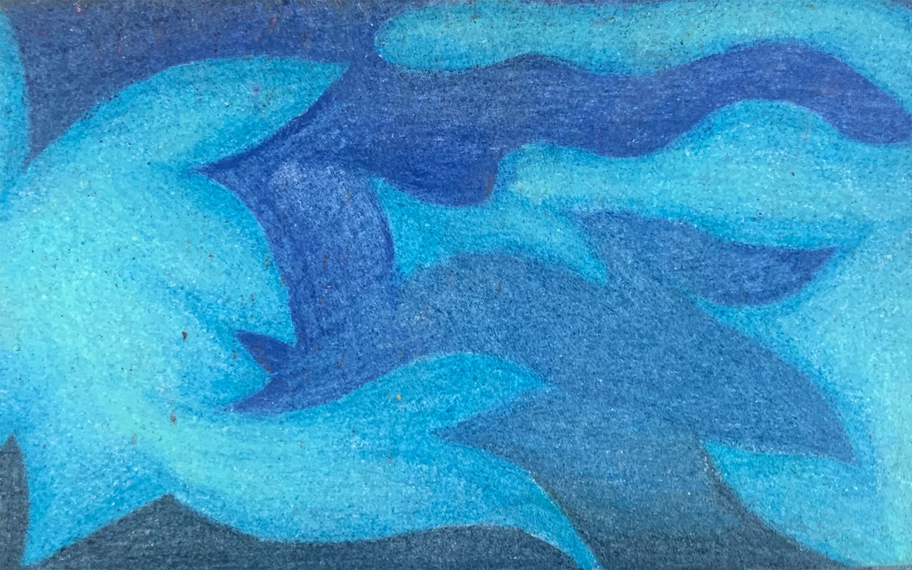
week one
week two
week three
week four
week five
week six
week seven
week eight
week nine
week ten
week eleven
week twelve
week thirteen
week fourteen
week fifteen
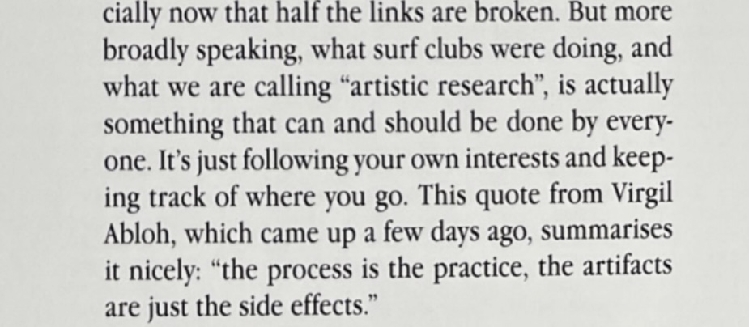
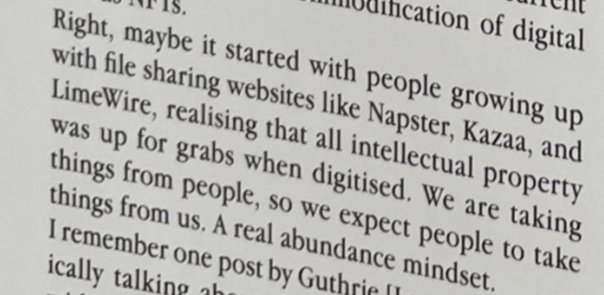
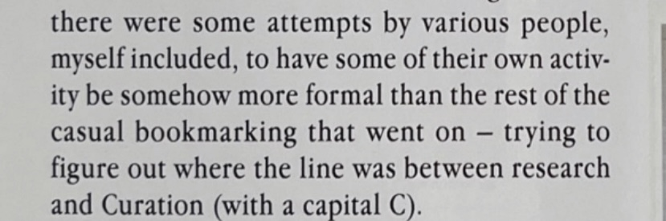
Use of css- optional - ppl around the world are viewing the. Content where css isn’t available
Css is designed to not loose content - not cause harm. I want to be css - what if it stops working??
“Control…is a limitation of the printed page”
Letting go control - the key idea of this class
Designing to fail- for its worst condition
Free flowing web pages- key idea
Length of the text- align w images
dont have everything squished up
Make it easy for the user to read it responsively
Basic is g
Questions: does the value of generative art change
over time? Why is crowdsourcing important as compared
to the years of experience the artists themselves have?
What is the origin of generative art?
Questions: is one big idea enough for the web page?
How do you create a system for the website that feels natural for the user? Do you want it to feel natural to the user?
How can you randomize a system? Why is there so much emphasis on the system
drawing other peoples output. Some turned out super interesting, but some were really confusing. I saw everyone just peeking over the person next to them to see how they are taking in the information. Vague language can be interpreted so differently by people- can create super interesting results.
Questions: how important is language will giving out instructions.
During class:hen reached the class, had a lecture by travis- SO FKN COOL. He is doing some really cool stuff and felt really inspired after the talk. Now our individual projects begin, and the quality of them will depend on how much effort I will put in it myself, I have a couple of ideas in my head but want to do more research and then finalize. Generative art is a lot of the variables that are changing, what will u decide to change is what will make the outputs interesting.
Notes:
Questions: value of NFTs, are they just for the rich, because you need a certain income to be part of that? Deinstutionalising but is it happening in its true form?
Reading Response: Todays art and its technological models
"You would have to be unbelievably ethnocentric not to see that technological progress is
far from being universal, and that the south of the planet, the so called
"developing world", does not enjoy the same reality as Silicon Valley as far as technocal goods are
concerned, even though both are part of an ever-narrowing world." (pg 65)
"Subsequently, modern painting would focus its issues on what it contains in terms
of scaling things down to mechanical recording(,atter, and gesture, which would give rise
to abstract art" (pg67)
"the digital image, for its part, results not from the movement of a body,
but from a calculation"(pg 69)
Reading Response: Automation Learning a Living
"This is a familiar pattern in electric technology in general. It ends
the old dicotomies between culture and technology, between art and commerce,
and between work and leisure"(pg 347)
"The tendency is to speak of electricity as painters speak of space; namely,
that it is a variable condition that involves the special positions
of two or more bodies"(pg 347)
"Instant synchronization of numerous operations has ended the old mechanical
pattern of setting up operations in lineal sequence."(pg 349)
Reading Response: Hyperemployment-Post-work, Online Labour and Automation
"An app which tracked the timestamp of their work and the number of mouse clicks and key presses
they performed wile working on the platform during 24 hours. She used the collected data
to produce two line drawings and two animations portraying the
work of this on-demand online workforce in the form of infographics"(pg 43)
"Praise of Laziness: Laziness is the absence of movement and thought, just dumb time-
total amnesia. It is also indifference, staring at nothing, non-activity, impotence.
It is sheer stupidity, a time of pain, futile concentration. Those virtues of laziness are
important factors in art. Knowingabout laziness is not enough, it must be practiced and perfected."
Reading Response: NFTs and The Readymade Reversed
"Duchamp used the category of art to liberate materiality from commodifiable form;
the NFT deploys the category of art to extract private property from
freely available information."(pg 4)
"The relation between matter and property is political. Art can function as a
technology of extraction, or it can, as Duchamp's work did, destabilize the movement of matter's
becoming-property in ways that are historically specific and aesthetically engrosing." (pg 4)
"The NFT is a social contract that values property over material experience. That contract can be broken.
"
Reading Response: HP Pen Plotter Hello World
"The social component of preservation that I am referring to is not really
about convincing the right people that something is in fact worth being preserved,
but rather about allowing a piece of culture to be taken care of by culture itself.
The more people who have a chance to lay their eyes on "The Source" the more likely
it is that the software will survive in one form or another." (last page)
Reading Response: Information Play
"No one today can predict what games post-Gutenberg man will want to play."
"This looseness spreads throughout three, more focused manifestations of play
that define our age: profusion, complexity, and emergence. Each of these terms
mines a progressively deeper and richer vein of intellectual and cultural play that issues
from the computer's micro-informational power and determinism"(pg 236)
Reading Response: How has Software affected the Visual Arts
"art that is transactional in that they deal with underlying structures
of communication and energy exchange"(pg 21)
"Software is a tool for the mind. While the industrial revolution
produced tools to augment the body, such as the steam engine and
the automobile, the information revolution is producing tools to extend the
intellect."(pg 17)